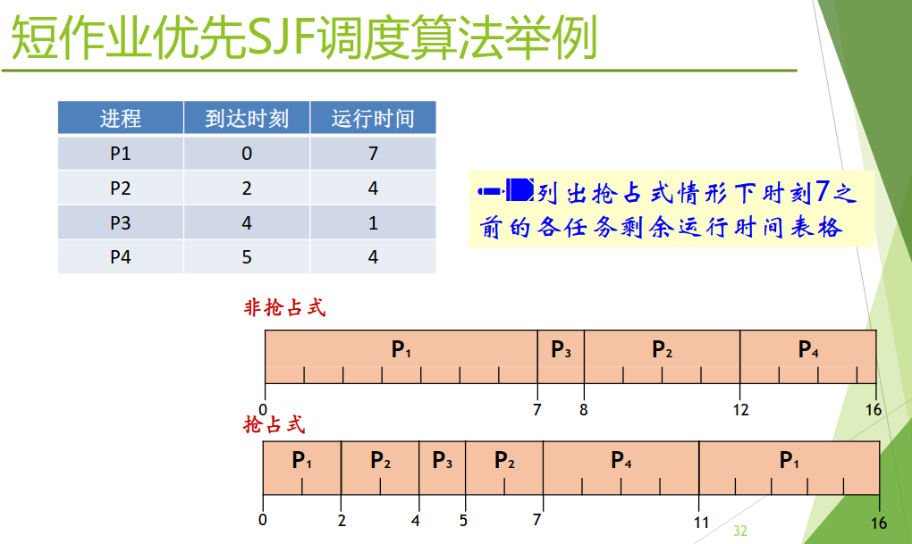
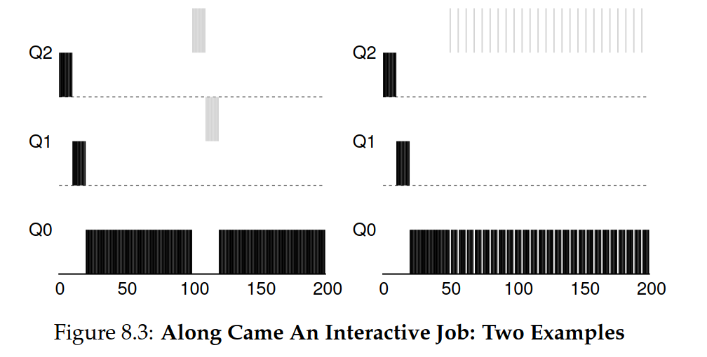
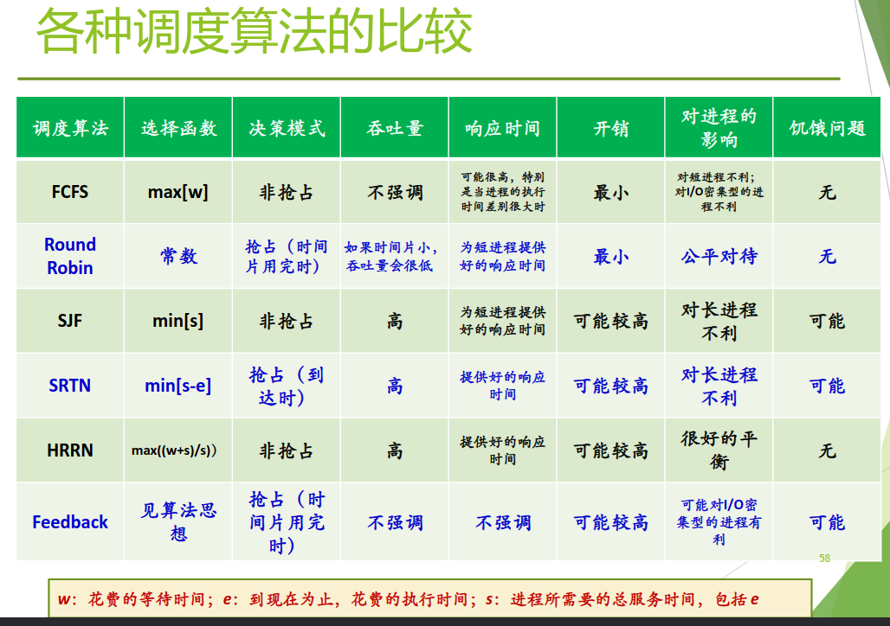
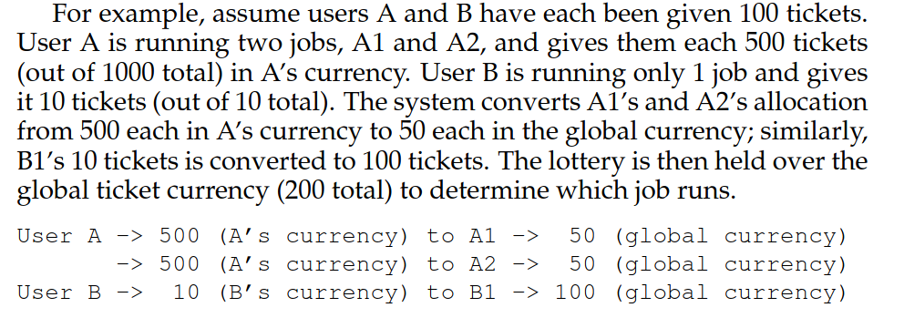
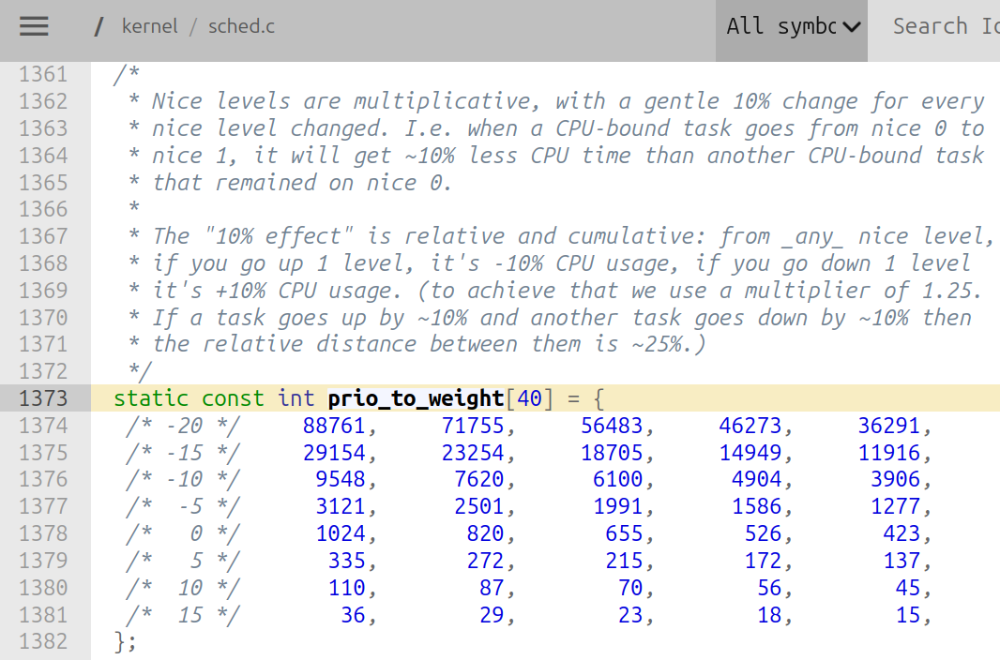

这是在资源池化之后，对资源进行统一管理和共享的方法。
定义：处理器调度即控制、协调进程对CPU的竞争，按一定的调度算法从就绪队列中选择一个进程，把CPU的使用权交给被选中的进程。如果没有就绪进程，系统会安排一个系统空闲进程或idle进程。
idle进程
是操作系统的优先级最低的进程，任何普通进程就绪时都会立即抢占idle进程；当CPU没有实际的任务需要运行时就运行idle进程。
可抢占式的调度器是指当有比正在运行的进程优先级更高的进程就绪（比如新创建的进程、从等待转为就绪等等）时，系统可强行剥夺正在运行进程的CPU，提供给具有更高优先级的进程使用；不可抢占则是一个进程运行后，除非由于自身原因不能运行，会一直运行到结束。(按照这个定义，Round Robin就不算是抢占)
对于进程执行过程中的行为，有I/O密集型和CPU密集型，前者往往需要较高的优先级，保证响应速度；后者往往给予较低优先级，需要大量CPU时间计算。
这里解决三个问题：调度时机、过程、算法。
一、调度时机 #
当：
- 进程执行完毕退出 / 由于错误或异常终止 / 需要等待IO操作进入阻塞态如
read()/ 被阻塞重新回到就绪态 - 新进程创建
- 进程用完所分配的时间片回到就绪队列
- 进程主动放弃CPU
- 时钟中断
事件发生 → 当前运行的进程暂停运行 → 硬件机制响应后 → 进入操作系统，处理相应的事件 → 结束处理后：
某些进程的状态会发生变化，也可能又出现了一些新的进程
→ 就绪队列有调整 → 需要进程调度根据预设的调度算法从就绪 队列选一个进程
内核对中断/异常/系统调用处理后返回到用户态前最后时刻，调度的过程也是在内核态下完成的。
二、调度过程 #
过程就是：从就绪队列中选择要运行的进程，可能是新的也可能是被暂停的。前者涉及到进程的切换，恢复现场时需要PCB；后者不需要切换，恢复时只需要去系统栈中。
对于前者的上下文切换，主要包括切换全局页目录以加载一个新的地址空间，和切换内核栈和硬件上下文。或者说对原来进程的保存和对新进程的恢复。
而上下文切换是有一定开销的，直接开销就包括上述的保存和恢复、切换地址空间；间接开销则是包括高速缓存和TLB的污染和失效，其对于开销的影响是相当大的。
三、调度算法 #
这是机制与策略中的策略。至于机制，往往是在事件发生时会进行调度，机制能够保证正确执行。
1. 考虑因素 #
不同的操作系统有不同的追求目标，对于不同的目标也会有不同对应的调度算法。目标有交互式系统（需要很快响应），批处理系统（不必很快响应，但有高吞吐量和CPU利用率），实时系统（如视频音频，不应被低优先级阻塞）。
对于调度算法有不同的性能指标：
- 吞吐量Throughput - 每单位时间完成的进程数目
- 周转时间Turnaround Time
- 响应时间Response Time
对于进程会有优先级，方法是赋予一个优先数字，可以是静态的（在创建时指定）或动态的。
2. 算法设计 #
FIFO/SJF/SRTN #
在批处理式系统中：
- FCFS先来先服务：若长进程先来，会导致短进程的TT（turnaround time）很长。是非抢占式。
- SJF短作业优先：但是若短进程后来，仍然会导致TT较长。是非抢占式。
- SRTN最短剩余时间优先：SJF的可抢占式。优点是平均TT最短（在所有进程同时可运行时）；但是可能会导致长进程被源源不断的短进程阻塞而饥饿。

- HRRN最高响应比优先：
响应比=周转时间/处理时间 = 1 + (等待时间/处理时间)。好处是长进程不会造成饥饿，被阻塞时间过长时响应比越大。缺点是实际用处不大。
上述四种都有一个问题，即是在假设已知进程运行时间的前提下进行的调度，但是这显然是不合理的。
RR 基于时间片 #
在交互式系统中：
- RR轮转调度Round Robin：选择一个合适的时间片，对进程进行轮转执行。若时间片过短，会导致切换进程的时间占主导，浪费时间；若过长，会退化为FCFS，延长了短进程的响应时间。且对于长短进程交织时有利，对于相近时间的则会比FCFS还低效。
注：上述几种算法的详细解释、示例以及算法的启发点可查看：https://pages.cs.wisc.edu/~remzi/OSTEP/cpu-sched.pdf ，很通俗的教材
- MLFQ(Multi-Level Feedback Queue)
⭐Multi-Level Feedback Queue 基于优先级 #
由于对于实际的任务是无法提前得知其运行时间长短的，这个算法是鉴于这个难点上设计的一种从历史中学习并预测未来的方法。这个方法会有一组不同的队列queues，每一个队列都分配了一个不同的优先级priority level。在任意时刻，每个准备运行的任务只会在某一个队列上；优先级最高的队列上的任务优先运行。
至于优先级，MLFQ会根据任务的运行进行动态调整，一般而言，如果一个任务会长时间占用CPU就给予较低优先级；如果需要频繁放弃CPU(repeatedly relinquish the CPU)来进行IO就给予较高优先级。这样，MLFQ通过尝试学习进程的运行来使用历史以预测其未来的行为。
这个算法中有这些基本规则：
- 如果Priority(A)>Priority(B)，A运行
- 如果Priority(A)=Priority(B)，A和B以RR算法同时运行
那到底该如何动态调整进程的优先级呢？
这里给出一个新概念：一个任务的allotment，是这个任务在调度器降低其优先级之前，其在当前优先级所能花费的时间份额。并给出一些新的规则：
- 当新任务进入系统时，给其最高优先级

如上图，左侧是一个长运行时间任务先进入系统运行，在100ms的时候进入了第二个短运行时间任务，由于刚刚进入时优先级高所以可以得到优先执行；右侧是在50ms时进入了一个需要频繁IO的任务，由于在IO时放弃CPU，没有消耗完其allotment，保持优先级不变。
此时问题是，(1)可能会导致饥饿，假如有非常多交互类型的任务，它们的优先级会一直保持很高的水平，导致占用所有的CPU时间，那些需要长时间运行的任务就会饥饿。(2)有心者会故意编写程序，使得任务在allotment用完之前执行一次IO当低优先级进程持有高优先级进程需要的锁时，临时提升低优先级进程的优先级到高优先级进程的级别。来重置时间，保证优先级不变来达到占用CPU的目的。(3)还有可能某些CPU密集型(CPU-bound)任务会变为交互型任务，但是此时其优先级会很低而导致response time极长。
如何解决呢？这里再给出一个规则：The Priority Boost
- 在一段时间S过后，将所有的任务都提升到优先级最高的队列中（注：这里是简化版本，还有其他的boost方法）
此时，对于问题(1)那些长时间运行的任务就不会饥饿，而是回合其他任务一起进行RR调度执行；对于问题(3)也会有机会得到响应。这个S的值的设置似乎是需要“black magic”，是voo-doo constants，值过大或者过小都不好。
对于问题(2)，最简单的方式就是修改规则4：
- 一旦一个任务在某一个优先级用完了其allotmant（不管放弃了多少次CPU），都要降低其优先级
这样就完成了介绍。
在实际运用中，各个参数需要设计者提供一个默认值（比如需要多少队列、allotment和S值的设置等等），最好提供一个参数表给用户也能自定义。一般还会给不同优先级设置不同的allotment，比如高优先级短一些。
3. 优先级反转问题 #
Priority Inversion，在基于优先级的抢占式调度器中，可能出现的现象：一个低优先级进程持有一个高优先级进程所需要的资源，使得高优先级进程等待低优先级进程运行。
- L（低优先级） 获得锁，进入临界区
- H（高优先级） 被唤醒，抢占 CPU，尝试获得同一把锁 → 被阻塞（因为 L 持有锁）
- M（中优先级） 此时变为可运行（如定时器到期），优先级高于 L
- M 抢占 CPU，L 无法运行 → L 无法释放锁 → H 永远等不到锁
- 结果：M 在运行，H 在等待，L 被饿死
解决办法？
- 优先级天花板协议：每个锁关联一个"天花板优先级"（等于可能使用该锁的最高优先级进程的优先级）。进程持有锁时，其优先级被提升到该锁的天花板高度。
- 使用中断禁止：在低优先级进入临界区后禁止被其他任务打断，保证低优先级先完成。
- 优先级继承：当低优先级进程持有高优先级进程需要的锁时，临时提升低优先级进程的优先级到高优先级进程的级别。

四、其他算法 #
下面这三个是Proportional-Share scheduler公平共享调度。
lottery scheduling 彩票调度 #
这是一种基于概率的调度算法。每个进程拥有各自的tickets数目以表示其占据CPU的份额（shares），调度器每隔一段时间（比如一个时间片）就随机挑选一个ticket，选到哪个进程哪个就运行，这是运用了Randomness的思想。
在具体机制细节上，有几种有效的机制，如：
- ticket currency
这是一个支持层次化的机制，核心思想是不同进程组可以拥有自己“本地”的票据，这些票据按不同汇率映射到全局调度使用的“全局票据”。给出的例子如下：

- ticket transfer
这是允许ticket在不同进程中暂时转移以达到暂时提高另一个进程的效率的机制。比如在client/server场景中，用户端需要服务器为自己完成一个操作，为了加速完成，用户端可以将tickets传递给服务器；在完成后服务器再传递回来。
- ticket inflation
这是允许进程自行增加或减少其ticket的机制，需要用在一组互相信任的进程组中，否则可能会完全占据CPU。
对于彩票调度，经过实验证明当进程的运行时间较短时并不能保证很好的公平性；且对于进程tickets的初始化也是不好确定的，为此提出一个新的调度方法：stride scheduling（步幅调度）。
stride scheduling 步幅调度 #
这是一种确定性的公平调度算法，消除了随机性。每个进程有一个stride步幅，这个步幅可以认为是tickets的倒数（比如A和B的tickets是100和200,用1000来除以这俩数得到10和5就可以认为是步幅）。此外每个进程还有一个pass步幅值，运行时每次累加一个步幅。具体流程也很简单，在开始运行时，选择一个最小步幅值pass的进程，运行，然后将其加上其对应的步幅。这样对于小步幅的进程会得到更多次机会运行，也恰好对应了其ticket多（并且是严格按照ticket的比例来获得运行次数的）。
那为什么还需要随机性的彩票调度呢？因为其拥有一个全局状态。意思是，假设在运行一段时间后来了一个新进程，对于步幅调度而言若将pass值设为0会得不到运行；然后对于彩票调度只需要对其赋予一个ticket，并简单地将全局总ticket数字增加即可。
⭐The Linux Completely Fair Scheduler #
这里先对Linux调度器的历史做一个简单的介绍：
Linux 调度器的演进，本质上是对“既要响应快，又要吞吐高，还要公平”这个矛盾的不断平衡。
- Linux 2.4：O(n) 调度器
这是早期的实现。每个进程拥有一个 counter（时间片）和 nice 值（优先级）。每次调度，内核需要遍历所有进程（O(n)）找出优先级最高的进程来运行。当所有可运行进程的时间片都耗尽了，才会重新计算新的时间片。它是非抢占式的，对实时进程的支持很差，高优先级任务也得等低优先级任务主动让出 CPU。
- O(1) 调度器
为了解决遍历开销和实时性问题，O(1) 调度器引入了两个重要的改进：
优先级数组：维护“活动active”和“过期expired”两个队列，pick next 只需从高位优先级的位图中直接找到下一个任务，时间变为常数级。
实时优先：实时进程优先级永远高于普通进程，且不会被系统动态修改。
不过，它计算进程优先级的那套公式比较晦涩，有点black magic的成分。
- 过渡与补丁（SD / RSDL）
在 O(1) 之后、CFS 之前，社区尝试了 SD（楼梯调度） 和 RSDL（旋转楼梯） 等补丁。它们试图解决 O(1) 调度器在某些负载下“交互性判断不准”的问题，为后来 CFS 的完全公平思想做了铺垫。
- Linux 2.6~6.10：CFS（完全公平调度器）
这是 Linux 目前的核心调度器。它将调度逻辑统一为：
普通进程：使用 CFS。核心思想是“虚拟运行时间”（vruntime），选择 vruntime 最小的进程运行，本质上模拟了一个无限精确的公平队列。
实时进程：依然使用 FIFO（先进先出）或 RR（时间片轮转）策略，保证对硬实时和软实时任务的快速响应。
- Linux 6.11之后：EEVDF调度器
CFS 从RSDL/SD中吸取了完全公平的思想，不再跟踪进程的睡眠时间，
也不再企图区分交互式进程。CFS算法中，每个进程都有一个“虚拟运行时间”(virtual runtime,vruntime)表示该进程运行了“多长时间”，而调度器会选择虚拟运行时间最小的进程来运行。虚拟运行时间的计算与进程实际运行时间成正比，而与进程优先级成反比（这也很好理解，成反比才能保证优先级越高，实际运行时间越长）。CFS以虚拟运行时间作为键值构造一棵红黑树，从而实现了快速更新和删除。
不同的nice值会对应不同的weight权重，在v2.6:/kernel/sched.c中有一个对应关系的数组：

使用权重，可以计算分配给每个进程的时间片：
$$ \text{time-slice}_k=\displaystyle\frac{\text{weight}_k}{\sum_{i=0}^{n-1}\text{weight}_i} \cdot \text{sched-latency} $$其中sched_latency是CFS用来决定一个进程在进行切换之前能运行多久的时间，一般而言其值为48ms。也可以叫做调度周期，因为在这一个时间段内会将所有RUNNING态进程都调度执行一遍（公平性）。那当进程太多的时候，为了保证每个进程的运行时间不会太短，会有另外的参数min_granularity保证每个进程至少会运行的ms数。
注意这里的time_slice还是实际的物理时间，而要计算vruntime还需要再利用权重调整增加速率。公式如下：
可以发现，nice值越低，weight权重越大，vruntime增加的速率越慢。这样就有更多机会得到调度运行机会。
现在问题来了：如何在众多可运行进程中找出当前最小的vruntime的呢？CFS采用了一种高效的数据结构：红黑树（Red-Black Tree）。以 vruntime 为键值，最左节点就是最小 vruntime 的进程，查找时间为 O(1)（在具体实现中会对最左节点进行缓存），插入和删除为 O(log n)，兼顾了公平与效率。
有关红黑树的具体定义请参考上面文字链接中的wikipedia内容；有关其在Linux内核中的原始声明和定义，以及使用的方式可参考我写的另一篇文章：
Linux虚拟内存系统与红黑树的应用浅析
关于此处的具体代码细节如下：
在task_struct中有struct sched_entity se，这个结构体用于实现对单个任务的调度的信息，在这个结构体中嵌入了一个红黑树节点struct rb_node run_node；同时这个结构体中还有u64 vruntime。那么在拥有节点指针后，可以通过container_of宏来获得这个节点所处的se结构体指针，进而取得内部的vruntime值进行比较，更新红黑树结构。（关于这个宏的解析也请参考上方TIP下面的文章）
这里还有一些问题：休眠进程的vruntime一直保持不变吗？休眠进程在唤醒时会立刻抢占CPU吗？实际上，假设保持不变，很容易引起饥饿问题。解决的办法是，取当前红黑树中最小的vruntime，赋值休眠醒来的进程。
第四部分的总结：
Lottery uses random-ness in a clever way to achieve proportional share; stride does so deter-ministically. CFS, the only “real” scheduler discussed in this chapter, is abit like weighted round-robin with dynamic time slices, but built to scaleand perform well under load; to our knowledge, it is the most widely used fair-share scheduler in existence today.
五、一些实例 #
Windows线程调度 #
调度单位是线程，采用基于动态优先级的、抢占式调度，结合时间配额调整。使用32个线程优先级，分为三类：0号是系统线程；1-15是可变优先级；16-31是实时优先级，优先级不会改变。
引起线程调度的条件增加了：
- 线程优先级改变
- 线程改变了其亲和处理机集合
亲和性 是指线程可以绑定到指定的 CPU 核心上运行，而不是在所有核心之间随意迁移。
交互式线程和I/O 密集型线程的优先级会得到动态提升，而计算密集型线程（长时间占用 CPU 的线程）优先级反而会被衰减。
对于大体的调度策略有三种情况：
- 主动让出CPU,线程从运行态转为阻塞态，由下一个高优先级运行。
- 抢占，此时对于被抢占的进程会回到原来一个优先级的队首，若其是实时优先级，时间配额重置为完整的一个；若其是可变优先级，时间配额不变，运行刚刚剩余的时间配额（这里和MLFQ中的规则4有一定差别，主要是因为Windows线程的优先级类别的差异导致的）。
- 时间配额用完，通常来说会回到原来那一级的队尾，选择该队列的队首线程，若没有则让A继续运行。
调度策略中还有细节的处理，如该如何体现对某类线程的倾向性？如何改善吞吐量？等等。解决方案，一是提升线程优先级，二是给线程分配一个很大的时间配额。对于下面五种情况会提升线程当前优先级：
- I/O操作完成
- 信号量或事件等待结束
- 前台进程中的线程完成一个等待操作
- 由于窗口活动而唤醒窗口线程
- 线程处于就绪态超过了一定的时间还没有运行，即“饥饿”现象
对于第五点，系统线程有平衡集管理器每秒钟扫描一次就绪队列，发现其中存在的排队超过300个时钟中断间隔的线程，提升优先级到15分配4倍正常值的时间配额，用完后立即衰减到原先优先级。（也算是一种priority boost）
一般而言在线程的时间配额用完后会对优先级进行回调。
多处理器调度 #
多个处理器组成一个多处理机系统，处理器之间可负载共享。（还有一种对称多处理器调度SMP(Symmetric MultiProcessing)，每个处理器运行自己的调度程序，对共享资源的访问需要进行同步）
此时设计算法时需要考虑进程需要在哪一个CPU上执行；考虑进程在多个CPU之间迁移的开销（如高速缓存和TLB失效）；考虑负载均衡。（对于SMP有静态进程分配和动态，前者负载可能不均衡，后者调度开销大）总的来说需要考虑的有：
- 缓存一致性(Cache Coherence)：因为对于单核而言，为了加速CPU访问主存的速度引入了高速缓存，但是在多核中，每个处理器都有自己的高速缓存，然而主存是只有一个的，于是就引起了一致性问题。可以使用总线嗅探(Bus Snooping)，即所有核心通过共享总线监听其他核心的读写操作来解决，典型协议有MESI协议。
- 缓存亲和性(Cache Affinity)
- 核间数据共享
- 负载均衡：作业偷取
- 数据同步(Synchronization)：虽然可以用锁解决但是当CPU数增加时效率会很低。
负载均衡想把任务挪走，而缓存亲和性想把任务留住，二者之间有一定的冲突。缓存亲和性考虑的是如何利用已有的缓存数据。它倾向于让一个线程始终在同一个核心上运行，这样该核心的 L1/L2 缓存中已经缓存了该线程的数据，无需重新加载（避免缓存未命中）。而负载均衡考虑的是如何压榨所有核心的算力。它倾向于把任务从忙的核心挪到闲的核心，确保所有核心都有活干，避免“一核有难，多核围观”。
事实上，在Linux中，O(1) / CFS / BFS(BF Scheduler, based on EEVDF)这三种都是多处理器调度，O(1)和CFS都使用的是多个队列，而BFS使用的是一个队列。O(1)是以优先级为基础（类似于MLFQ），交互性是首要任务；CFS则是以公平共享为基础的（类似于彩票调度）；BFS也是以公平共享为基础的。
对于队列的一或者多引出的讨论：一个队列的话实现很方便，但是使用锁来保持同步会导致可拓展性(scalability)降低，且当CPU增多时会导致性能降低；同时对于缓存亲和性也是不友好的（有一个解决办法是让尽量少的任务在各个CPU之间轮转，其余的尽量保持同一个CPU不变）。而对于多个队列，相较于前者，缓存亲和性问题得到了一定解决，但是又引出了新的问题即负载不均衡，给出的解决策略是作业偷取(work stealing)。
实时调度 #
目的？对外部请求在严格时间内做出反应；高可靠性。硬实时要求必须在截止时间前完成，软实时允许超时。
有三种模型：周期性任务、偶发性、非周期性。如果有多个周期事件，若每个事件所需要的CPU时间 / 周期 的总和小于等于1则是可调度的。
有两种算法：速率单调（所有任务都是周期，静态）和最早截止时间优先（动态）